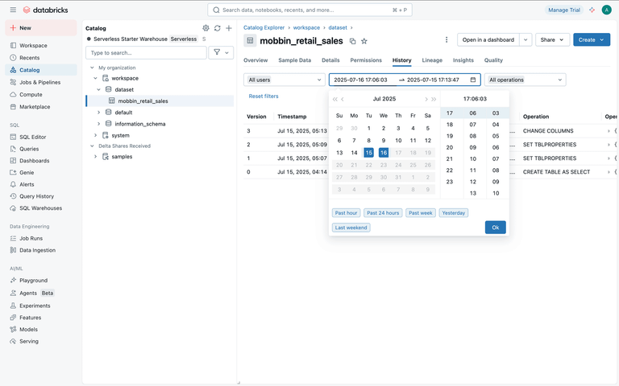
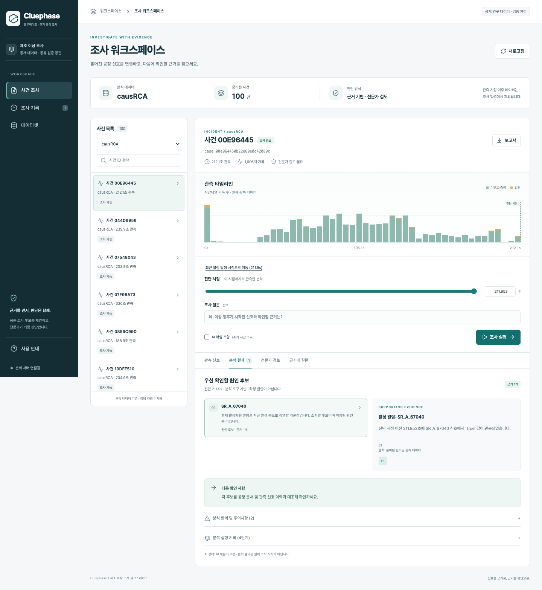

네이비·청록을 유지하고, 굵은 제목과 둥근 카드의 반복을 줄입니다. 작업 흐름과 근거의 의미는 바꾸지 않습니다.
Minimal의 문서 정렬, Glyphs의 목록 구분선, MotherDuck의 기술 메타정보 표현을 참고합니다. 문서·마케팅 레퍼런스를 제품 화면 자체의 사용성 증거로 취급하지 않습니다.

붙어 있는 목록과 상세, 얇은 구분선, 표 중심의 작업 공간.

요약은 얇은 정보 띠, 사건은 행, 결과는 조사 기록. 선택과 실행에만 청록 강조. 가벼운 제목과 고정폭 ID를 사용합니다.
검증: 조사·근거·검토·질문·보고서 회귀 테스트, 1440px와 390px 화면 확인.